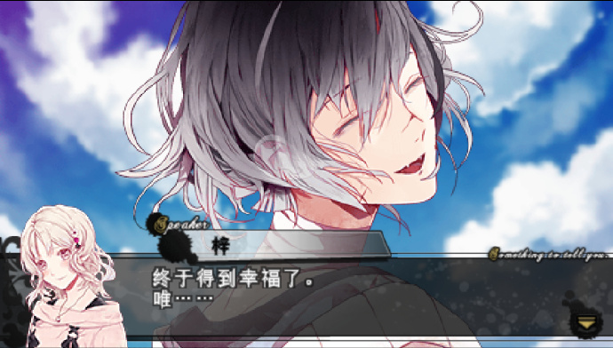

1 | 游玩顺序： |
第一部玩的时间离太久了，所以写的是第二部的内容。汉化版血祭是真的好难找啊。
开局逆卷兄弟和女主去学校，路上遭遇无神家兄弟出了事故，唯因为事故晕了过去，见到了卡尔海因茨，之后就是伊甸计划的发展了。
可能这个游戏需要属性才玩的下去，每次唯被咬的时候我脖子都特别难受，但是她反抗的时候我也怕伤口更严重，玩的时候就非常纠结。
逆卷奏人
精神状态最不稳定，以及他真的好爱吼啊，以至于被吼习惯了玩其他线的时候，看别人心情不好第一反应是，如果是奏人的话他肯定又要吼我了。
但是就是这个好嗑啊，其他线奏人都无所谓杀不杀唯，在梓的线只是把她当做所有物，被人拿走就想毁掉杀掉，换到奏人线生气吼几下就完事，最多再丢点东西。
这句台词一出来我就在想，确实，这已经算是非常温柔了，对他来说的话。特别是玩了梓线之后更有感触了。
本来对这种病娇还暴躁的人设没什么兴趣的，但是这种忍着脾气（虽然不多但是确实忍了）的我真的无法拒绝。甚至玩通关之后没了他吼我我都不习惯了。
剧情奏人被梓烧毁了小熊，后面奏人丢掉了小熊选择了唯，梓也为了两个人死去了。以及为什么有了科迪莉亚的心脏变成吸血鬼，唯她爹就不认了，真就工作猎杀吸血鬼杀傻了。
be结局应该是爱情度不够，就算是唯做的泰迪奏人也不满意，后面奏人想起来泰迪里有科迪莉亚的骨灰，就把唯杀了烧掉，把骨灰放进唯做的泰迪里了。礼人过来找唯的时候发现了，说了可怜的唯没有得到奏人的爱。但是奏人还是说依旧爱着唯。
啊这，这个剧情，只能说丢掉泰迪的那一刻肯定是爱的，只是后面冷却了，可能be的爱情是消耗机制，那时候用了就没掉了。
普通结局里梓死去之后，唯和奏人知道了墓地位置，唯天天去给梓扫墓，之后就是奏人吃醋，在梓坟墓旁边挖了个洞，把女主推了下去，说等到你想清楚想跟谁在一起，再让你出来，在那之前会天天过来看你。
这个结局对我来说还好，还是会给人放出来就行，虽然我看不到。
he结局跟第一部大差不差，第一部是唯被洗脑失去记忆只记着奏人，两人都是吸血鬼，杀了其他人住进了宅子里。
这一部也是两个人住在一起，唯给奏人缝制泰迪熊，奏人还会暗地里给所有泰迪取名字，奏人还会让唯不要一直专心缝泰迪，只能一直想着他。
不过he和普通结局的差别最大就是，he里唯不知道梓墓地的位置，如果知道了那肯定应该就是普通结局被扔洞里了。
无神梓
自残的狠人，在普遍S的角色们中间非常突出的M，至少玩的时候觉得M多于S。就算是要刀也会抓着唯的手刀自己，然后不小心又把唯也划个口子再吸个血，真有你的呀。
会给自己的伤口取以前伤害自己的人名字，把伤害自己当做是爱和喜欢，剧情上最折磨我的角色，你非得划几刀是吗，就算是丢点东西都比拿刀划人好啊。
拿出收藏刀的时候就觉得大事不妙，这唯真不愧是女主，他拿刀不是要刀他自己就是要刀你，这你都不跑的，然后你俩在互相拉扯一波再割一波伤口，给伤口再取个名字叫夏娃，伤口淡了再来一次叫交流。
剧情后面因为梓需要恢复自己才能活着，唯就劝着梓舍弃那些取了名的伤口，赶紧恢复，之后这俩就在一起了
除了he之外的结局都非常离谱，be里唯非得离开梓，说这样不对，我们就是得分开，跑出去被梓发现了，就开始拿刀捅，被捅成真的受虐狂了，没被刀几下不舒服的那种。伊甸计划算是失败，他俩回去之后过日子的时候（有事没事捅几下）就被卡尔海因茨一把火烧了。
普通结局里梓开始嫉妒，不让唯跟任何人说话甚至见面，直接给关起来了，过了不知道多少天，为了变成一体，躺在一起的时候梓就把唯吸血吸死了。

可能是落差感太大了，he结局放在其他地方就很普通，在这里就好得让人震惊。两个人离开了无神家，生了三个孩子，分别对应之前梓伤口（之前欺负他的人），终于和平在一起了，泪目。
逆卷礼人
长相性格都是我感兴趣的，特别是动漫里是真的特别好看，第一部太过母控所以我并不是很喜欢，不过这一部其实还好，一开局大家都知道唯的心脏是科迪莉亚的了。
不知道是不是逆卷一定对应一个无神家的，礼人线出现的是煌。礼人刚开始还很喜欢NTR，后面就开始嫉妒。后期因为爱着唯开始不见唯也不吸血。这就是爱情吗，连饭都不吃了。后面唯死去才不痛苦，发现是爱情。之后唯被卡尔海因茨复活，两人在一起之后就进入结局了。
be和普通结局也和梓的差不多。be里礼人非得让唯杀了自己，说爱我就是要杀我，给吸血鬼一个结局，唯不同意就说她不爱自己，所以自己也不爱她，然后反手把人杀了，之后说爱果然不是需要的，就走掉了。
啊？刚在一起就寻死，你这什么毛病。我不理解，你甚至之前为了她饭都不吃人都不看了，一在一起就非得让人杀了你，不杀就是不爱，她不爱你你就不爱她，那你之前非得不吸血还整的那么痛苦是干啥。
普通结局是煌过来刺激礼人，非得吸唯的血还给人瞧见了，回去之后礼人就给唯做成了人棍，说是什么蝴蝶之前的茧，虽然比起之前会嫉妒了，可能这也是一种好事。
he就是因为剧情里唯和煌在礼人不见唯那段时间，去约了个会，礼人就真的和唯一起约会了。哇他真的会去拍大头贴我哭死。会不那么严重的吃醋也不寻死，终于让我瞧见礼人变正常了。
之后的角色也是硬拖，没有继续玩，说不定明天就玩了，也说不定一直不碰。奏人就算是到礼人线通关我也一直有印象，那句台词是真的太棒了。也可能是因为他吼得太大声了，我又给吼习惯了。就冲着这句“我有过对你不温柔的时候吗？”，现在奏人是我主推了。
下一次应该是先煌线，然后再继续逆卷家。

箱庭
混乱甜饼人